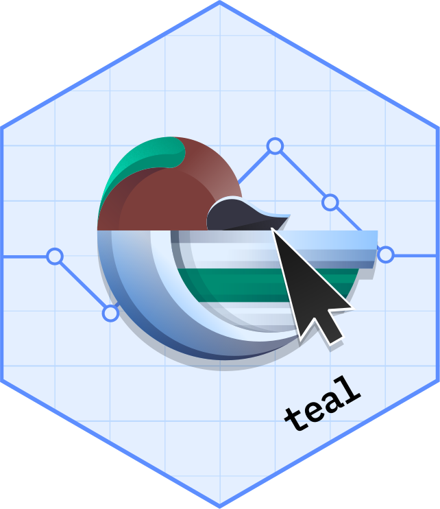

Make teal_transform_module's server
Source:R/teal_transform_module.R
make_teal_transform_server.RdA factory function to simplify creation of a teal_transform_module's server. Specified expr
is wrapped in a shiny module function and output can be passed to the server argument in
teal_transform_module() call. Such a server function can be linked with ui and values from the
inputs can be used in the expression. Object names specified in the expression will be substituted
with the value of the respective input (matched by the name) - for example in
expression(graph <- graph + ggtitle(title)) object title will be replaced with the value of
input$title.
Arguments
- expr
(
language) An R call which will be evaluated withinteal.data::teal_dataenvironment.
Examples
trim_iris <- teal_transform_module(
label = "Simplified interactive transformator for iris",
datanames = "iris",
ui = function(id) {
ns <- NS(id)
numericInput(ns("n_rows"), "Subset n rows", value = 6, min = 1, max = 150, step = 1)
},
server = make_teal_transform_server(expression(iris <- head(iris, n_rows)))
)
app <- init(
data = teal_data(iris = iris),
modules = example_module(transformators = trim_iris)
)
if (interactive()) {
shinyApp(app$ui, app$server)
}